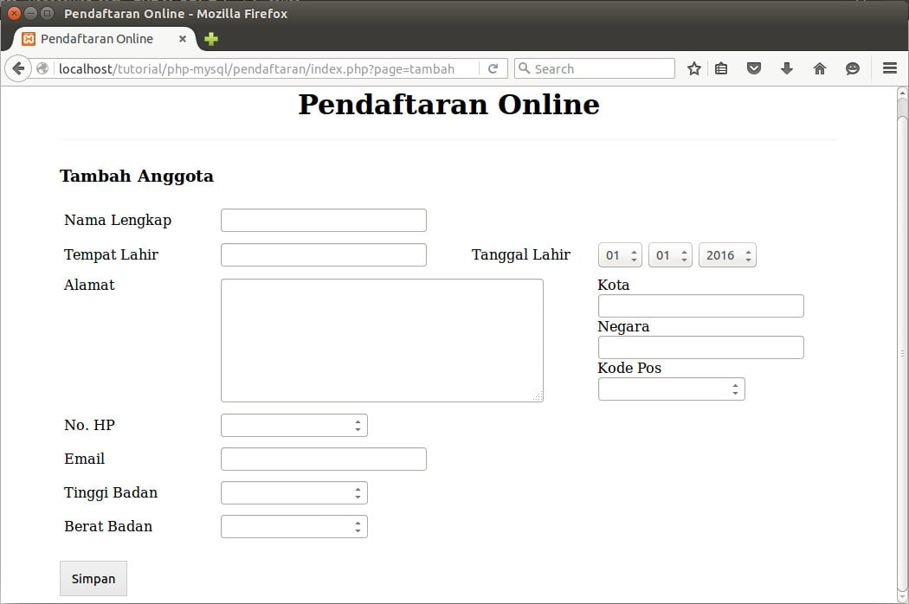

7.2.1 Struktur dan Organisasi Dalam Dialog Berbasis Pengisian Borang
Kualitas antarmuka berbasis pengisian barang tergantung kepada tiga aspek tampilan pada layar. Ketiga aspek tersebut adalah struktur data masukan yang diperlukan oleh sistem, kejelasan perancangan dan penyajiannya secara visual pada layar, dan derajat kebenaran dan kehandalan penerimaan data masukan oleh program lewat berbagai fasilitas pemasukan data yang ada didalam borang tersebut. Jika borang itu secara langsung mencerminkan keadaan sistem yang sebenarnya, seperti tampilan pengisian data identitas untuk KTP, maka antarmuka ini merupakan contoh dari manipulasi langsung.

Kunci terpenting dalam dialog berbasis pengisian borang adalah bahwa (hampir) semua informasi dapat nampak secara serentak, sehingga memudahkan pengguna dalam hal pengontrolan dan manipulasi atas informasi yang nampak di layar. Dengan demikian, dalam antarmuka berbasis pengisian borang diperlukan suatu peranti masukan yang dapat digunakan untuk menggerakan kursor sehingga pengguna dapat mengontrol dan memanipulasi informasi secara langsung pada layar. Peranti masukan yang paling mudah dijumpai dan sangat popular adalah papan ketik dan tetikus.
Beberapa aspek yang perlu diperhatikan dalam perancangan tampilan dialog berbasis pengisian borang antara lain:
1. Proteksi tampilan , adanya pembatasan agar pengguna tidak dapat mengakses semua tampilan yang ada dilayar.
2. Batasan medan tampilan, medan data dapat ditentukan untuk mempunyai panjang yang tetap atau berubah, menggunakan format bebas atau tertentu.
3. Isi medan , pengguna biasanya mempunyai sejumlah gambaran tentang isi medan yang diperbolehkan; petunjuk pengisian dapat juga ditampilkan sebagai bagian dari tampilan.
4. Medan Opsional, dapat dinyatakan secara tekstual atau menggunakan aturan tertentu seperti penggunaan warna berintensitas rendah, warna tampilan yang berbeda, dan lain-lain.
5. Default, apakah dalam medan isian dimungkinkan adanya nilai default. Jika ya, tentukan tempatnya, apakah pada bagian yang tidak dapat diakses pengguna ataukah pada bagian masukan data.
6. Bantuan, adanya bantuan (help) yang menunjukkan cara pengisian borang dapat pula, atau malah sebaliknya, ditambahkan, tetapi harus terpisah dari bentuk dasar borang.
7. Medan penghentian, masukan data dalam medan dapat diakhiri dengan jalan menekan tombol enter dan return atau mengisi karakter terakhir dengan karakter tertentu, ataua dengan berpindah ke medan lain.
8. Navigasi, kursor dapat digerakkan sekeliling layar yang menggunakan tombol Tab dan urutan yang tetap, atau dapat pula digerakkan secara bebas menggunakan peranti seperti mouse.
9. Pembetulan kesalahan, pengguna dapat membetulkan kesalahan menggunakan tombol BackSpace, dengan menumpang tindih isian lama, dengan jalan membersihkan dan mengisi kembali medan tersebut, dan lain-lain.
10. Penyelesaian, perlu diperhatikan cara yang digunakan untuk memberitahu pengguna bahwa seluruh proses pengisian telah selesai.
kUNCI TEPE